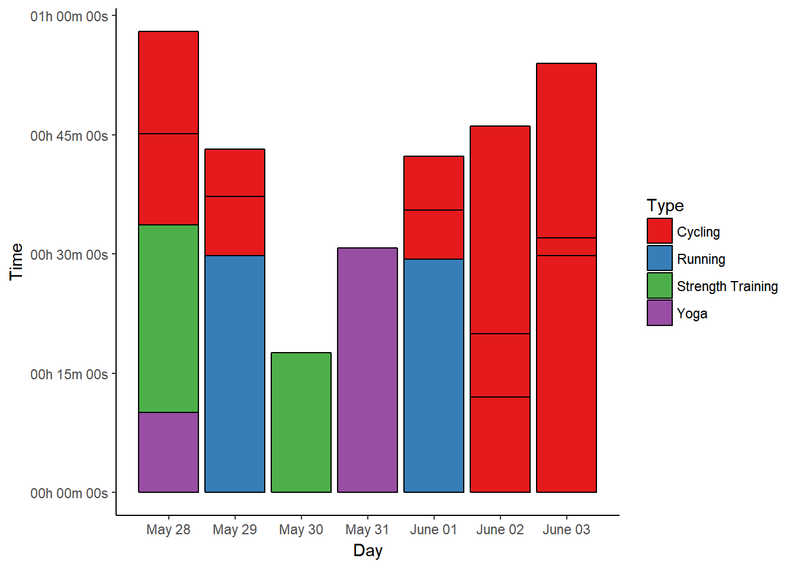
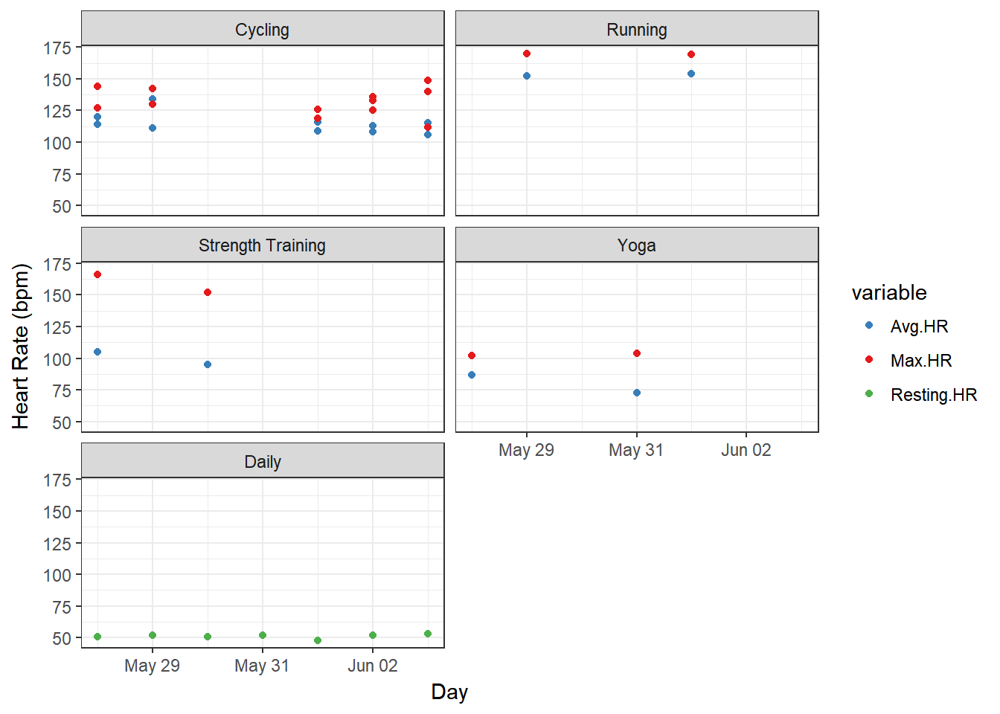
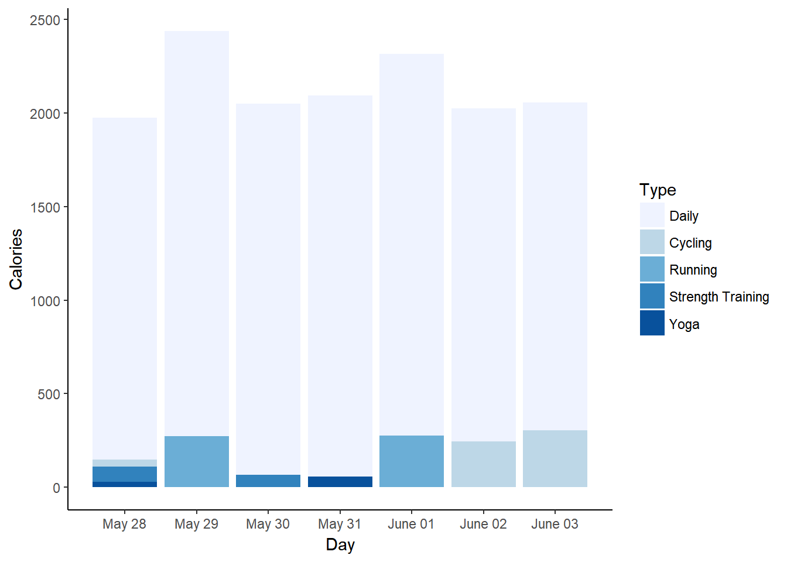
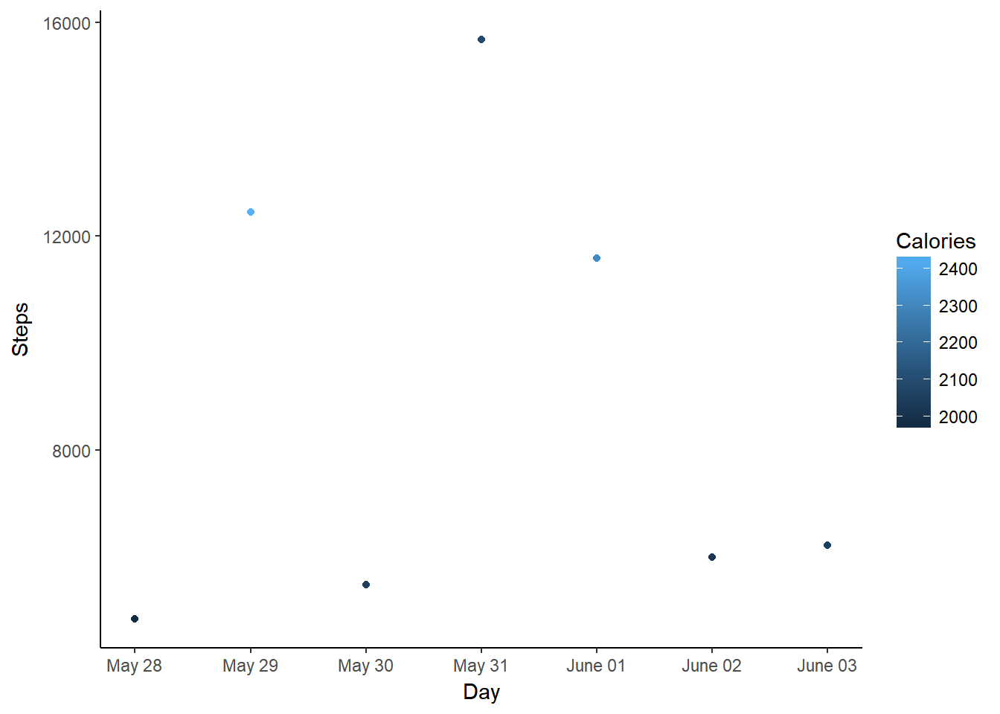

# read in data
data <- read.table("Week3.csv", header = TRUE, sep = ",", na.strings = c("NA",
"--", ""))
# convert time/date objects
data$Start <- as.POSIXct(data$Start, format = "%a, %d %B %Y %H:%M")
data$Time <- times(data$Time)
# remove morning exercise
dataf <- data[!data$Type == "Other", ]
# convert exercise type to factor and reorder for plotting
a <- recode(as.numeric(as.factor(dataf$Type)), "1=1; 2=5; 3=2; 4=3; 5=4")
dataf$Types <- reorder(dataf$Type, a)
# first look
summary(data)
datafMy week three data contains activities I tracked from May 28th to June 3rd, again sorted into different types (cycling, running, etc.) together with relevant data, as well as some overall statistics for each day. Here is a table showing how much time I spent with each activity:
kable(ddply(dataf, .(Type), summarise, duration = sum(Time)), format = "html",
table.attr = "style='width:20%;'")| Type | duration |
|---|---|
| Cycling | 02:30:54 |
| Daily | NA |
| Running | 00:59:06 |
| Strength Training | 00:41:07 |
| Yoga | 00:40:51 |
As expected, I cycled less than in the previous week, but it’s still a lot. That’s because I actively tracked short distances that wouldn’t otherwise appear here - but I didn’t do that for #SummerPain (the six minutes it takes to get from home to the office can hardly be called a workout). I’m currently participating in a German project called Stadtradeln, where people from cities from all over Germany pledge to use their bike more and collect kilometers for their cities in a friendly competition. So I’m currently “mapping” my standard commute rides at least once to have a reference for entering my kilometers in that competition.
Other than that, I was out running twice again, and upped my strength training a bit, while I only had time for one 30 minute and one short yoga session.
Since workout duration is important for #SummerPain, I’m visualising it for each day with a bar chart.
# extract day from activity start
dataf$Day <- as.Date(dataf$Start)
# ignore daily data for plotting
datas <- subset(dataf, !Type == "Daily")
p1 <- ggplot(datas, aes(x = Day, y = Time, fill = Type)) + geom_bar(stat = "identity",
colour = "black") + scale_fill_brewer(palette = "Set1")
p1 <- p1 + scale_y_chron(labels = date_format("%Hh %Mm %Ss"))
p1 <- p1 + theme_classic() + scale_x_date(date_breaks = "1 day", date_labels = "%B %d")
p1
May 28th was a strength day, followed by ten minutes of yoga stretches. All of that happened after we worked in our new flat and cycled to get ice cream in the late afternoon.
I started the work week (after 1.5 weeks of vacation) with almost 30 minutes of running and later tracked two of my most common commuting cycle routes.
On May 30th I only had time for a quick core strength training session, and May 31st was so exhaustingly busy I only did yoga to relax.
Thursday, June 1st was another running day, with a different cycling route to be tracked.
On June 2nd we cycled to the new flat after work, and then to our favourite Biergarten for dinner.
June 3rd saw another trip into the city for errands, which always yields enough workout minutes (and kilometers).
In the overview, I’m showing my average and maximum heart rates per workout type as box plots for the different calendar weeks, but for weekly data I’ll stick to simple data points.
# melt HR data
HRdata <- melt(dataf, id.vars = c("Activity", "Types", "Day"), measure.vars = c("Avg.HR",
"Max.HR", "Resting.HR"))
p2 <- ggplot(data = HRdata, aes(x = Day, y = value, colour = variable)) + geom_point() +
scale_colour_manual(values = c("#377EB8", "#E41A1C", "#4DAF4A"))
p2 <- p2 + facet_wrap(~factor(Types), nrow = 3)
p2 <- p2 + theme_bw() + labs(y = "Heart Rate (bpm)")
p2
This past week, cycling was again more transportation than exercise, and the other heart rates didn’t change much from the previous weeks. Strength training can sometimes also get my heart pumping, though. ;-)
The third metric I wanted to include is calorie burn, since I always think it’s interesting to know what difference exercise makes compared to a workout-free day.
# reorder types for this plot
b <- recode(as.numeric(as.factor(dataf$Types)), "1=2; 2=3; 3=4; 4=5; 5=1")
dataf$Types <- reorder(dataf$Type, b)
# sum up calories per exercise type per day
datac <- dcast(dataf, Day ~ Types, sum, value.var = "Calories")
datacm <- melt(datac, id.vars = "Day")
colnames(datacm) <- c("Day", "Type", "Calories")
p3 <- ggplot(datacm, aes(x = Day, y = Calories, fill = Type)) + geom_bar(stat = "identity",
position = "identity") + scale_fill_brewer()
p3 <- p3 + theme_classic() + scale_x_date(date_breaks = "1 day", date_labels = "%B %d")
p3
Running days see the highest calorie burn this week, while even days involving lots of cycling can hardly be discerned from those where I did (almost) nothing.
# subset for only daily data
datad <- dataf[dataf$Type == "Daily", ]
p4 <- ggplot(datad, aes(x = Day, y = Steps, colour = Calories)) + geom_point()
p4 <- p4 + theme_classic() + scale_x_date(date_breaks = "1 day", date_labels = "%B %d")
p4
My step count’s doesn’t seem to play much of a role in this week’s calorie burns, as the day with the highest step count has a noticeably lower burn than the running days. My working habits play a big role in my step counts, though. Running in the morning helps, but otherwise I don’t get many steps in when I cycle to work and back. Wednesday is the exception here, because I worked in another city and commuted by train and on foot, rather than cycling. That always yields a lot of steps, but obviously doesn’t burn as many calories as running would (and not much more than cycling shorter distances).
In summary, I again completed six workouts in the third week of #SummerPain (ignoring the day that involved only walking and yoga). This brings me up to 18/100 workouts as of June 3rd.